lab, you will add a Combo Box to provide a drop-down list that operators can use to select which mixer they want to view at runtime. The mechanism used to switch mixers is the OwningObject property. The OwningObject property will be linked to the drop-down list to allow operators to change the instance reference used by the graphic to show data and animations. Objectives Upon completion of this lab, you will be able to: Use the OwningObject property to dynamically change instance references of a graphic Add and configure a Combo Box
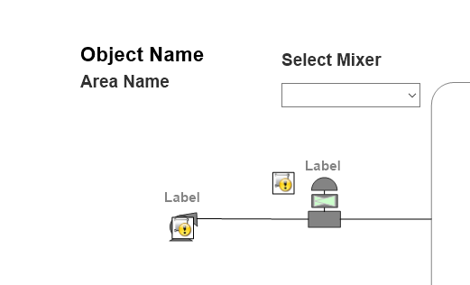
Development view showing generic mixer HMI template with Object Name, Area Name labels, Select Mixer dropdown, and schematic process graphics with placeholder labels for piping, tank/mixer vessel, and input nodes
First, you will create a SwitchedMixingProcess symbol in the $Mixer template, which will be used to switch between mixers at runtime. 1. In the IDE, on the Templates tab, in the Training\Project template toolset, double-click the $Mixer template. 2. In Content, click the Add button. 3. Name the symbol SwitchedMixingProcess, and then click the Edit Content button to open for editing. 4. Right-click the canvas and select Embed Industrial Graphic. 5. In Relative References, verify Me is selected, and then in the Me pane, select MixingProcess_Detailed.
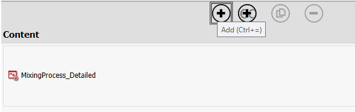
AVEVA InTouch Content panel showing MixingProcess_Detailed listed under Content section with Add button (Ctrl+=) tooltip visible, for managing HMI screen content in the $Mixer template
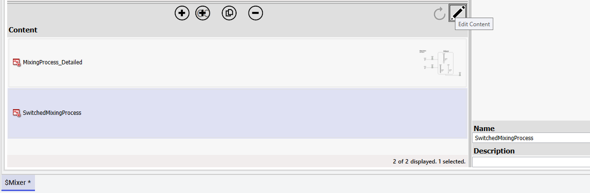
Content panel showing MixingProcess_Detailed with thumbnail preview and SwitchedMixingProcess (selected/highlighted) listed, with Edit Content pencil icon, 2 of 2 items displayed
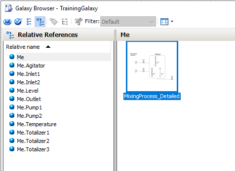
Galaxy Browser - TrainingGalaxy showing Relative References pane with Me hierarchy (Me.Agitator, Me.Inlet1/2, Me.Level, Me.Outlet, Me.Pump1/2, Me.Temperature, Me.Totalizer1-3), and Me pane with MixingProcess_Detailed thumbnail showing tank schematic
6. Click OK and place MixingProcess_Detailed on the canvas. 7. Name the graphic MixingProcess. Add the Combo Box Next, you will add a Combo Box and a text label to the canvas. 8. Aligned to the right of the $Mixer text, add a Text element with the text Select Mixer. 9. Configure the properties of the Text element as follows: Name: SelectMixer Element Style: Heading
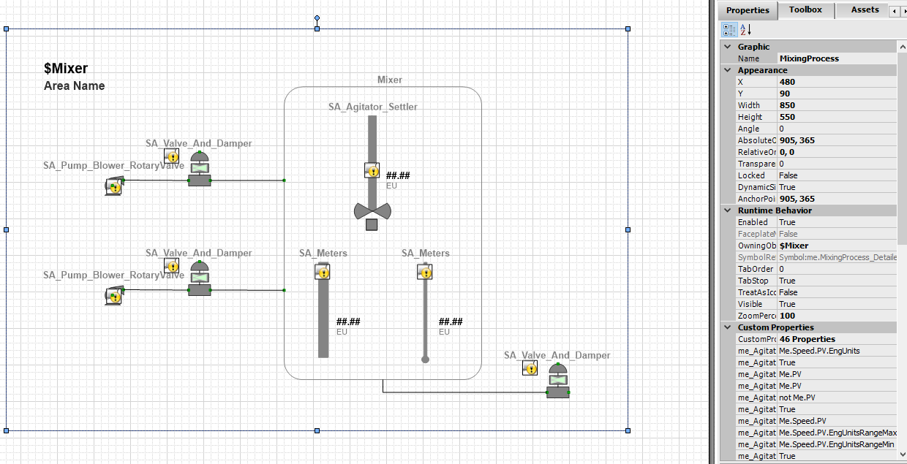
MixingProcess graphic on design canvas showing $Mixer area with Select Mixer label, SA_Pump_Blower_RotaryValve and SA_Valve_And_Damper symbols on inlet lines, SA_Agitator_Settler with ##.### EU placeholder, SA_Meters symbols, green connection nodes for process flow
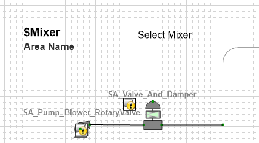
MixingProcess graphic design canvas with $Mixer and Area Name labels, Select Mixer text, pump/valve/damper symbols (SA_Pump_Blower_Rotary, SA_Valve_And_Damper) with yellow status indicators and green process flow lines
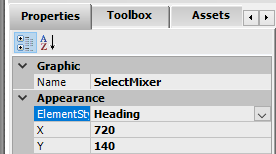
Properties panel showing SelectMixer text element with Name=SelectMixer, ElementStyle set to Heading, X=720, Y=140 position coordinates on the HMI canvas
Box. 10. In Tools, click Combo Box. 11. Below the Select Mixer text, click and drag diagonally to draw a Combo Box. 12. Name the Combo Box as MixerDropDown.
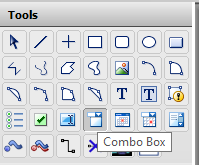
Tools palette showing all available drawing and HMI tools in a 5-row grid, with the Combo Box tool highlighted at bottom right for adding dropdown selection controls to the canvas
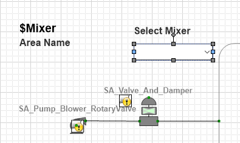
MixingProcess design canvas with $Mixer title, Area Name, Select Mixer label, SA_Pump_Blower_RotaryValve and SA_Valve_And_Damper symbols with blue selection handles indicating active editing of the valve graphic element
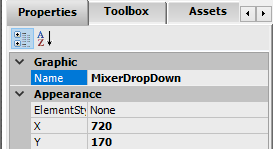
Properties panel showing MixerDropDown combo box element with Name=MixerDropDown, ElementStyle=None, X=720, Y=170 position coordinates
13. On the canvas, double-click the Combo Box to open Edit Animations. 14. In Edit Animations, in the Reference field, enter MixingProcess.OwningObject. Note: MixingProcess is the name you gave to the $Mixer.MixingProcess_Detailed graphic that you embedded on the canvas in this lab. The Combo Box will modify the OwningObject property of this graphic at runtime. 15. In Static Values and Captions, click the Add a row [Insert] button five times. One row in the table is needed for each of the eight mixers.
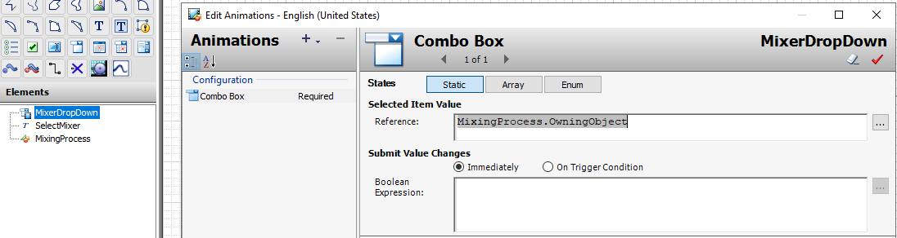
Edit Animations dialog for MixerDropDown Combo Box showing Reference field set to MixingProcess.OwningObject, Static tab selected, Submit Value Changes set to Immediately, for linking dropdown selection to OwningObject property
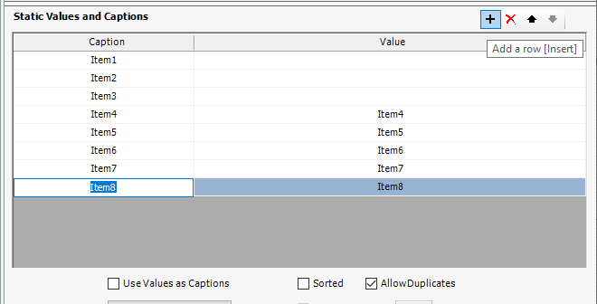
Static Values and Captions table for Combo Box showing 8 items (Item1-Item8) with Caption and Value columns, Use Values as Captions checked, AllowDuplicates checked, for configuring dropdown list entries
table, you will enable a property that affects the workflow for entering values. You will also set additional properties. 16. Below the table, check the Use Values as Captions check box. 17. Uncheck AllowDuplicates. 18. In the Type drop-down list, select DropDown.
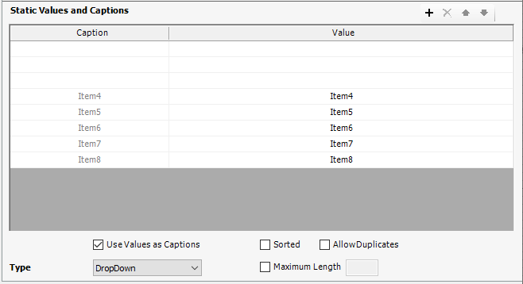
Static Values and Captions table showing Item4 through Item8 with Caption=Value pairs, Use Values as Captions enabled, Sorted unchecked, AllowDuplicates unchecked, Type set to DropDown for defining dropdown list behavior
19. In the Value column, enter the following values, pressing Tab after each entry to move to the next row. Notice that the Caption field automatically uses the value text. Mixer100 Mixer200 Mixer300 Mixer400 Mixer500 Mixer600 Mixer700 Mixer800 The configuration of your Combo Box animation will appear as follows: 20. Click OK to close Edit Animations. 21. Save and close the graphic. 22. Save and close and check in the $Mixer template.
Edit Animations dialog fully configured for MixerDropDown showing 8 mixer entries (Mixer100-Mixer800) in Static Values and Captions table, Reference=MixingProcess.OwningObject, Use Values as Captions checked, Type=DropDown, for runtime mixer selection
Now, you will replace the symbol in WindowMaker with the new SwitchedMixingProcess symbol you just created. 23. In WindowMaker, in the ContentDisplay window, right-click and select Embed Industrial Graphic to open the Galaxy Browser. 24. In Instances, scroll down and select Mixer100, and then in the Mixer100 pane, select SwitchedMixingProcess. 25. Click OK. 26. In the WindowMaker message, click Yes to replace the symbol. The symbol is replaced.
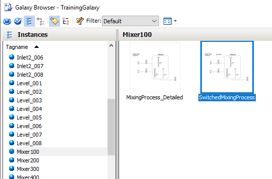
Galaxy Browser showing Instances pane with tag list (Inlet2_006-008, Level_001-008, Mixer100-400) and Mixer100 detail pane with MixingProcess_Detailed and SwitchedMixingProcess templates, SwitchedMixingProcess highlighted
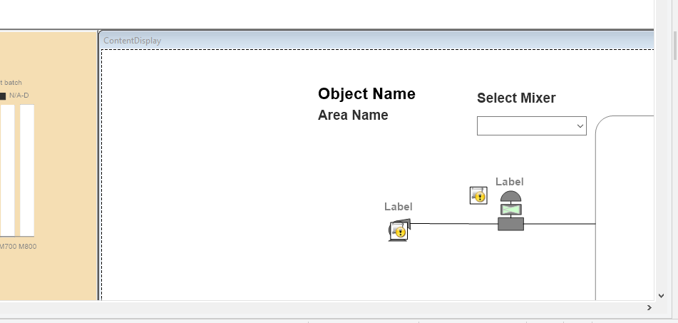
WindowMaker ContentDisplay window showing SwitchedMixingProcess embedded with Object Name, Area Name, Select Mixer dropdown, process graphics (pump, valve, mixer tank symbols) with placeholder labels, and left orange batch control panel
Finally, you will test the functionality of the drop-down list. 27. Click Runtime. 28. Use the Select Mixer drop-down list to select Mixer500. 29. Observe that the graphic updates to show Mixer500 names and values. 30. Use the Select Mixer drop-down list to switch to other mixers. 31. When you are finished testing, click Development! to return to WindowMaker.
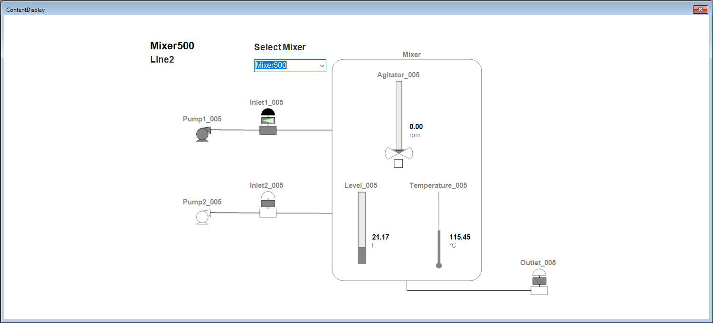
Runtime HMI screen showing Mixer500 on Line2 with Select Mixer dropdown, process schematic with Agitator_005 (0.00 rpm), Level_005 (21.17), Temperature_005 (115.45°C), Inlet1/2_005, Pump1/2_005, Outlet_005 components displaying live values
graphic. A custom property can contain: A value or valid expression An attribute from the automation object A property of an element or graphic A custom property of an embedded graphic A script function Custom properties can be set to either Private or Public: A Private custom property is not exposed when the graphic is embedded. A Public custom property can be customized when the graphic is embedded. Custom properties can also have Absolute or Relative references: An Absolute reference to an attribute that is fully defined, such as Tank1.InletValve.PV A Relative reference up the hierarchy to parent objects, such as Me.InletValve.PV If public custom properties exist for an embedded graphic, they display on the Properties tab in the Custom Properties category when the embedded graphic is selected. This section provides a brief overview of custom properties for symbols. It also describes the Button tool and explains how to use the PushButton and Show Symbol animations. Additionally, it describes the TreatAsIcon property.
properties. To add a custom property, click the Add custom property (+) button on the top-left of the dialog box. A new line appears in the list of custom properties on the left, and you can enter a name for the new custom property. Then you can configure the custom property in the configuration area on the right.
Edit Custom Properties dialog with + Add custom property button, empty property grid with Name and Default Value columns, right panel with Data Type, Default Value, Visibility, Description fields ready for defining new custom properties
Custom Properties table showing one property: Name=Cmd, Default Value=False, with blue highlight indicating selected property for editing
Edit Custom Properties dialog for CommandPanel showing Cmd property with Data Type=Boolean, Default Value=Me.Cmd (self-referencing), Visibility=Public, Description='Command for button', status text confirming property configured as reference to Me.Cmd
Knowledge Check
1. What are the key concepts covered in this lesson about The OwningObject Property + Lab 8?
Click to reveal answer
Review the sections above for the main topics, step-by-step procedures, and important configuration details.
2. How does this topic relate to AVEVA System Platform?
Click to reveal answer
This is part of the InTouch HMI layer, which integrates with Application Server's Galaxy for a complete visualization solution.
Module 3 — Symbols. AVEVA InTouch for System Platform 2023 Training.